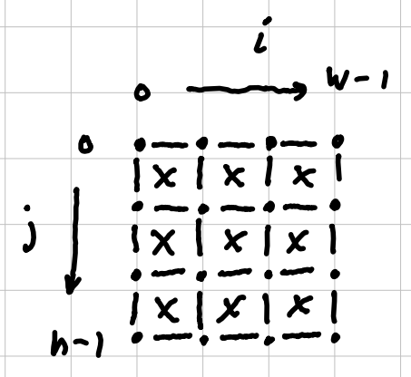
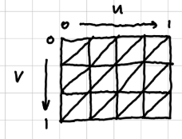
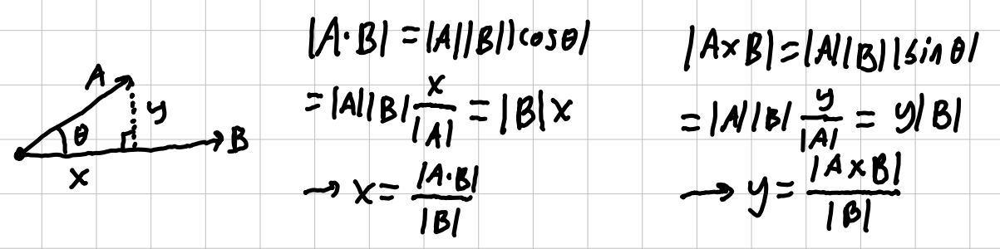
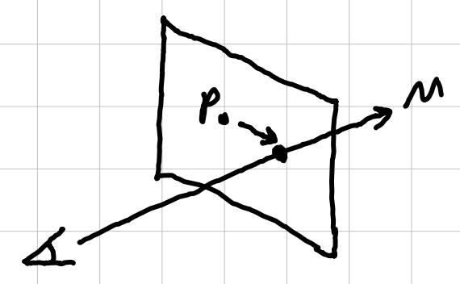

• Use the W/A/S/D keys to move the camera around.
• Use Shift/Space to move the camera up/down.
• Use the ARROWS to look around.
• Drag the left cursor to grab the cloth.
• Press P to play/pause the simulation.
• Press O to toggle the spring/outline view.
• Press B to toggle the bounding box view.
• Press 0-9 to change the flag sprite.
• Press L to set the scene light position.
I made this project to try and simulate a 3d cloth with wind forces.
To simulate each particle, I store its position, velocity, and acceleration. Each frame, gravity and a random wind force computed using perlin noise is applied to the acceleration.(note: each particle has a mass of 1 for simplicity.)
On program startup, a random resolution determines the cell spacing. These particles are placed in a grid along the xy plane. To construct the cloth shape, springs are placed between particles. Each vertical and horizontal adjacent pair is connected. Also, both diagonals are connected as well, helping the stability:

To render the surface of the cloth, the grid is tessellated into triangles. To texture the cloth with a flag sprite, in the grid step, the normalized uv coordinates are used to sample the given texture.

Each frame, all springs are updated using hookes-law and damping. I then use a verlet integration scheme to update the particles. The physics system runs at 240 time steps per second.
To make the mouse interaction, I first get the mouse ray using the camera's inverse view-projection matrix. Let the vector from the camera to the particle be A. Let the mouse ray be B. Then I calculate the parallel and perpendicular distances using the following:

Using this for each particle, I can filter by some selection radius (y<r) and choose the smallest x. On mouse down, I store the camera direction and the initial particle position as the hit plane. Then while dragging, I apply a spring force between the particle P and the intersection between the hit plane and the mouse ray M:

This project could be used as any fabric in game development, such as a character cloak or cape. It could also be used in cgi, or virtual fashion software to test new designs, garments, and materials.